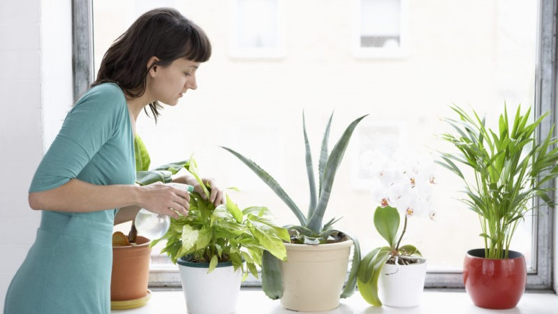

Indoor Plants Based on Your Personality
by: John Christian Tiosan
Everyone of us has their own unique personality. Some may be introverted, while others are extraverted; some always think logically, while others are more emotionally expressive; and some are practical, while others are imaginative and curious. The Myers-Briggs Type Indicator or MBTI is a popular way to classify ourselves to different categories. According to this, there are four roles each one of us belongs to. These are the analysts, diplomats, sentinels and explor...